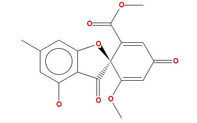

IntroductionOrchem contains functionality to convert between different chemical notations. It uses the the ConvertMolecule.java class located in Java package 'uk.ac.ebi.orchem.convert'. This class includes methods to convert:
Smiles To MolfilePackage.function: ORCHEM_CONVERT.SMILESTOMOLFILE.The function SMILESTOMOLFILE converts a Smiles to Molfile string:
Example
select orchem_convert.smilestomolfile('c1ccccc1',USE_BOND_TYPE_4=>'Y') from dual
OUTPUT:
-------
CDK 0715101546
6 6 0 0 0 0 0 0 0 0999 V2000
0.0000 0.0000 0.0000 C 0 0 0 0 0 0 0 0 0 0 0 0
0.0000 0.0000 0.0000 C 0 0 0 0 0 0 0 0 0 0 0 0
0.0000 0.0000 0.0000 C 0 0 0 0 0 0 0 0 0 0 0 0
0.0000 0.0000 0.0000 C 0 0 0 0 0 0 0 0 0 0 0 0
0.0000 0.0000 0.0000 C 0 0 0 0 0 0 0 0 0 0 0 0
0.0000 0.0000 0.0000 C 0 0 0 0 0 0 0 0 0 0 0 0
2 1 4 0 0 0 0
3 2 4 0 0 0 0
4 3 4 0 0 0 0
5 4 4 0 0 0 0
6 5 4 0 0 0 0
6 1 4 0 0 0 0
M END
select orchem_convert.smilestomolfile('c1ccccc1',USE_BOND_TYPE_4=>'N') from dual
OUTPUT
------
CDK 0715101546
6 6 0 0 0 0 0 0 0 0999 V2000
0.0000 0.0000 0.0000 C 0 0 0 0 0 0 0 0 0 0 0 0
0.0000 0.0000 0.0000 C 0 0 0 0 0 0 0 0 0 0 0 0
0.0000 0.0000 0.0000 C 0 0 0 0 0 0 0 0 0 0 0 0
0.0000 0.0000 0.0000 C 0 0 0 0 0 0 0 0 0 0 0 0
0.0000 0.0000 0.0000 C 0 0 0 0 0 0 0 0 0 0 0 0
0.0000 0.0000 0.0000 C 0 0 0 0 0 0 0 0 0 0 0 0
2 1 1 0 0 0 0
3 2 1 0 0 0 0
4 3 1 0 0 0 0
5 4 1 0 0 0 0
6 5 1 0 0 0 0
6 1 1 0 0 0 0
M END
Molfile To SmilesPackage.function: ORCHEM_CONVERT.MOLFILETOSMILES.The function MOLFILETOSMILES converts a Molfile to Smiles string:
Example
select orchem_convert.molfiletosmiles(orchem_convert.smilestomolfile('CC1CCCC1')) as smi from dual
SMI
--------------------------------------------------------------------------------
CC1CCCC1
Elapsed: 00:00:00.03
Molfile To JpegPackage.function: ORCHEM_CONVERT.MOLFILETOJPEG.The function MOLFILETOJPEG converts a Molfile to a picture in JPEG format, using JChemPaint software.
For database 11gThere is a Bug 7184929 regarding the fonts in Oracle Server - Version: 11.1.0.6 to 11.1.0.7Implement the workaround (check Oracle Metalink Note): 604472.1 - mkdir $ORACLE_HOME/javavm/lib/fonts - cp $ORACLE_HOME/jdk/jre/lib/fonts/* $ORACLE_HOME/javavm/lib/fonts Exampledeclare mdl clob; pic blob; begin select molfile into mdl from orchem_compound_sample where id=42; pic:=orchem_convert.MOLFILETOJPEG(mdl,800,600); end; RESULT pic: Molfile To InChiPackage.function: ORCHEM_CONVERT.MOLFILETOINCHI.The function MOLFILETOINCHI converts a Molfile to an InChi string:
Example
select orchem_convert.molfiletoinchi(orchem_convert.smilestomolfile('CC1CCCC1')) as INCHI from dual
INCHI
--------------------------------------------------------------------------------
InChI=1S/C6H12/c1-6-4-2-3-5-6/h6H,2-5H2,1H3
Back to main page |